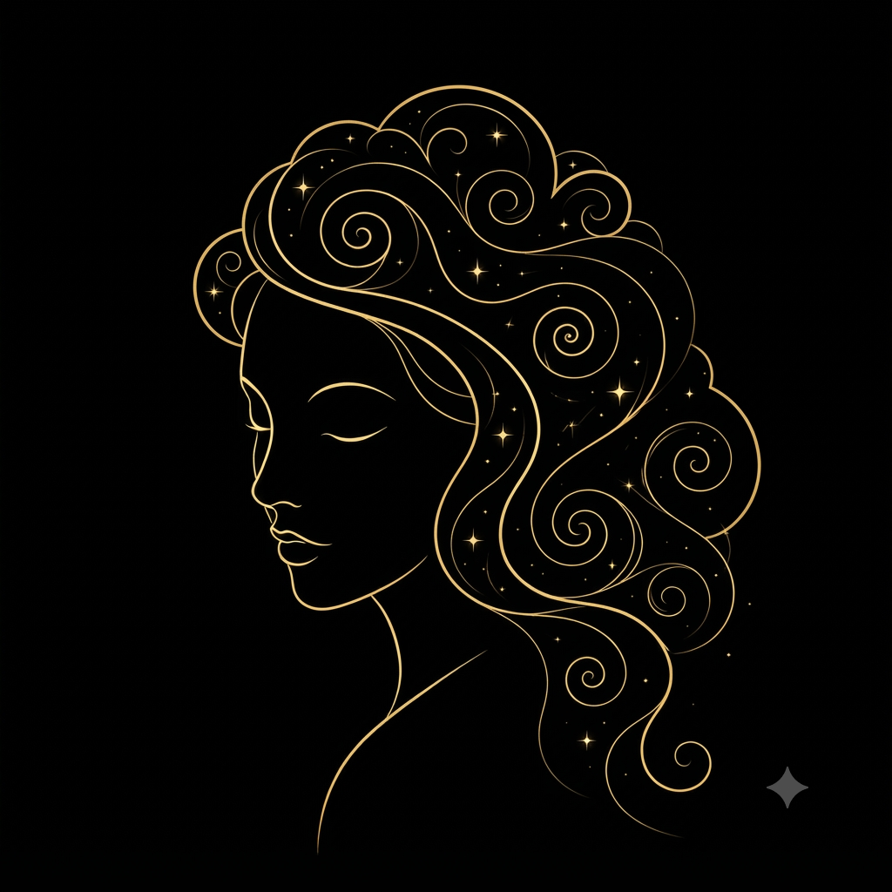

Le territoire
MANA.bzh
Tout commence en Finistère, MANA débarque en Bretagne, ce territoire où l'entraide est toute naturelle.
Rejoindre mana.bzh« Rendre le soin visible, durable et transmissible. »
Un seul compte pour tout l'univers MANA. Une identité que vous possédez : vos mondes se reconnaissent, vos données restent cloisonnées.
id.manahome.orgPasseport
Univers MANA
Titulaire
MANA
Identifiant
@mana
Tout commence en Finistère, MANA débarque en Bretagne, ce territoire où l'entraide est toute naturelle.
Rejoindre mana.bzh
Veiller sur ses proches, s'entraider et transmettre ce qui compte vraiment — la présence qui fait vivre, la mémoire qui fait durer.
Rejoindre MANAfamily
Le cercle qui relie associations, communes et citoyens autour de principes communs : le temps donné se reconnaît sans jamais s'acheter, l'attention ne se vend pas, la générosité fait le statut. Une gouvernance au service du lien.
Découvrir l'AllianceCommunes, associations et institutions pilotent leurs missions, leurs bénévoles et leur soutien depuis leur espace dédié, sur MANAfrance.
Accès partenaires
Votre attention n'est jamais vendue.
Votre mémoire vous appartient.
Vos proches passent avant les algorithmes.
Le temps partagé mérite d'être reconnu.
Lire notre Constitution

Une question, l'envie de rejoindre l'aventure ou de nous soutenir ? Laissez-nous un mot — nous vous répondons.